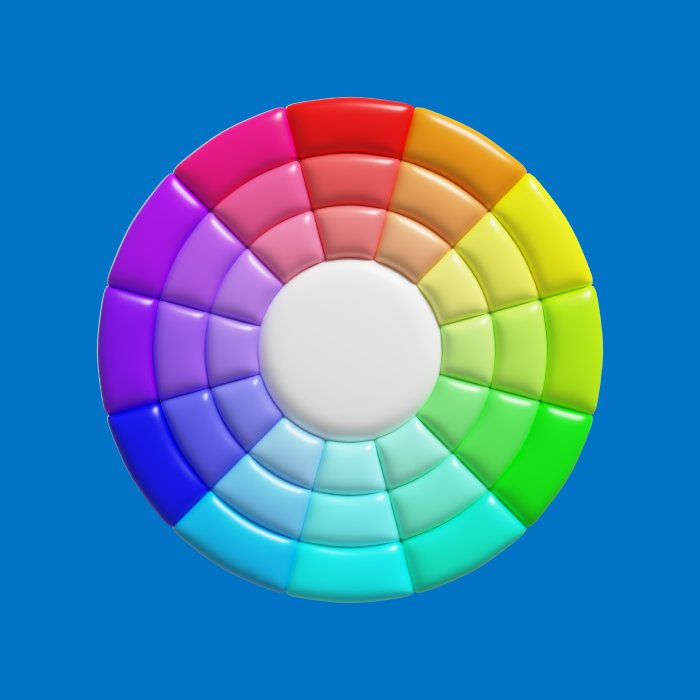

Color Guide
When picking sock colors, color theory can guide you. Use a color wheel to pair complementary colors, like blue socks with orange shoes, for a bold look. Analogous colors, like green socks with blue pants, create a more subtle vibe. Monochromatic shades of the same color offer a sleek, coordinated look. For everyday wear, neutral colors like black, gray, or navy work with almost anything. The color wheel is a great tool to keep your sock choices stylish and on point!
